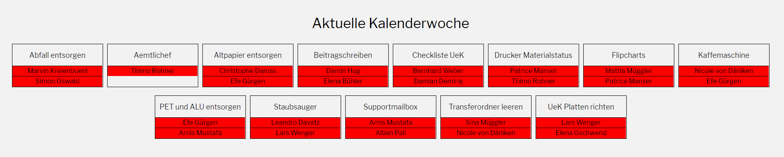

Meine Aufgaben im Basislehrjahr
Im Basislehrjahr gibt es unterschiedliche Aufgaben, die wir per
Zufallsgenerator jede Woche erledigen müssen. Für jede Aufgabe werden
immer zwei Lernende zugeteilt, ausser der Ämtlichef, der sollte
kontrollieren, ob alle ihre Aufgaben erledigt haben. Beim Drücken
auf den Auftrag werden die Aufgaben noch erläutert.

Eine dieser Aufgaben ist zum Beispiel das Altpapier zu entsorgen.
Zuerst wird es in allen Räumen gesammelt und dann zum 1. Stock gebracht,
wo es dann im Container entsorgt werden kann. Da der Container in
einem abgeschlossenen Raum ist, muss bei den Verantwortlichen nach
einem Schlüssel gefragt werden.
Eine zweite Aufgabe ist zum Beispiel, den Raum, in welchem wir uns
immer aufhalten und den Raum der Betreuer zu staubsaugen. Dafür wird der
Staubsauger im 1. Stock aus der Putzkammer geholt. Dies muss
ebenfalls mit dem Schlüssel erledigt werden, der sich beim Verantwortlichen
befindet.
Meine Aufträge im Basislehrjahr
Einer meiner Aufträge war eine Virtualisierung. Alle Lernenden hatten ihren eigenen Server, den wir selbst aufstellen mussten. Ausserdem wurden uns Bildschirme, USB, Maus und Tastatur zur Verfügung gestellt. Unser Auftrag war es, drei Virtualisierungen zu installieren: ESXI, XEN und Hyper-V, aber als erstes musste ich mich damit befassen, was die Virtualisierung ist und für was man diese benötigt. Der nächste Schritt war Informationen über die verschiedenen Virtualisierungen zu finden. Um den Server überhaupt starten zu können, musste ich die Anforderung kennen und wie die Installation funktioniert. Am Ende haben wir eine Evaluation geschrieben, welche für uns die beste Virtualisierung war. Am Ende der Seite befindet sich die Dokumentation der Virtualisierung.
Führe ich mehr Aufgaben oder Aufträge aus?
Meiner Meinung nach erfülle ich mehr Aufträge als Aufgaben. Da ich in
einer Woche keine bis drei Aufgaben erhalten kann und bis heute meistens
sehr viel Glück hatte, führe ich mehr Aufträge aus. Im Basislehrjahr
lernen wir immer wieder Neues dazu und bekommen dadurch auch immer
wieder Aufträge, die uns auf der Lernplattform zur Verfügung stehen.
Virtualisierung.pdf